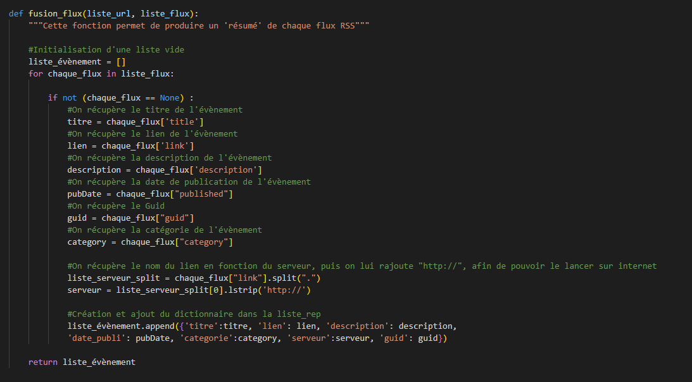
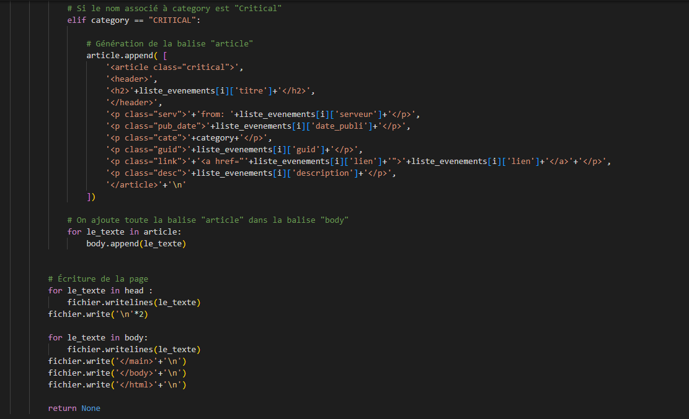
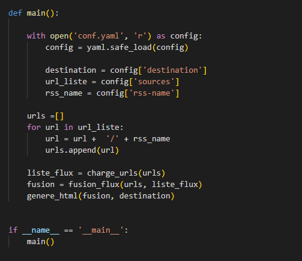

Partie import :
Les lignes de codes de cette partie vont permettre d’importer nos bibliothèques pour
l’exécution de notre programme.
Calendar : ce module nous permet d’afficher un calendrier ou nous fournit des fonctions
utiles relatives au calendrier.
Unicodedata : ce module donne accès à la base de données des caractères Unicode (UCD)
qui définit les propriétés des caractères pour tous les caractères Unicode.
Feedparser : ce module nous permet de télécharger et d'analyser des flux syndiqués.
Time : ce module fournit différentes fonctions liées au temps.
Yaml : ce module est couramment utilisé pour les fichiers de configuration, mais il est
également utilisé pour le stockage des données.
Fonction charge_urls(liste_url) :
Cette fonction récupère les documents RSS, les range dans une liste. Si une URL est
inaccessible, on range la valeur « None » dans la liste et renvoie la liste.
Nous avons commencé le code par une initialisation d’une liste vide qui nous permettra
d’accueillir les flux rss. Nous continuons avec une boucle qui traite chaque url présente dans
la liste des url. Les flux rss sont récupérés grâce à la bibliothèque feedparser. Pour l’étude de
notre flux, nous allons étudier le cas de « bozo ». Si cet élément contenu dans un flux est
égal à « False », nous ajoutons le flux dans la liste. Si ce n’est pas le cas, nous ajoutons None,
pour dire que le flux n’existe pas.
Partie fusion_flux(liste_url, liste_flux) :
Cette fonction prend en paramètres la même liste d’URLs que la fonction
charge_urls(liste_url) et aussi une liste de documents RSS telle que celle produite par la
fonction charge_urls(liste_url). Elle produit en sortie une liste dont chaque élément est un
dictionnaire décrivant un événement provenant d’un des sites. Les clés de ce dictionnaire
sont : titre, catégorie, serveur, date_publi, lien, description.
Le début de la fonction se traduit par une initialisation d’une liste vide. Pour tous les flux
présents dans la liste des flux et qui sont différents de « None », Nous créons des variables
titre, lien, description, pudDate, guid et category. Ces variables récupèrent donc le titre, le
lien, la description, la date de publication et la catégorie de l’évènement. Ensuite, nous
récupérons le nom du lien en fonction du serveur et on lui rajoute « http:// » car nous
voulons le lancer sur internet. Nous créons par la suite un dictionnaire dans notre liste
initialisée en début de fonction. Les informations stockées à l’intérieur sont le titre, le lien, la
description, la date de publication, la catégorie, le serveur et le guid.
Partie genere_html(liste_evenements, chemin_html) :
Cette fonction prend en paramètres une liste d’évènements structurée de façon identique à
celle produite par la fonction fusion_flux de l’étape 2, le chemin du fichier qui contiendra la
page HTML générée.
Pour le début de cette fonction, nous commençons par définir l’heure avec une variable
local_time. Puis nous abordons le sujet de la génération de notre site html. La balise head
sera générée en première, celle du body en second et les articles en dernier. Concernant les
articles, nous allons chercher dans la liste des évènements, les catégories pour les séparer en
3 : MAJOR, MINOR et CRITICAL. La création des articles se fait suivant le nom de la
catégorie : si le nom associé à category est « Minor », nous générons un article. Pareil pour
MAJOR et CRITICAL, : si le nom associé à category est « Major », nous générons un article et
si le nom associé à category est « CRITICAL », nous générons un article. Dans la suite du
programme, nous ajoutons la balise article dans la balise body. Pour finir, nous utilisons
.writelines et .write pour écrire dans la page.
Partie main :
Cette partie va permettre d’ouvrir le fichier conf.yaml et exécuter les fonctions
précédemment expliquées.
La partie main va nous permettre d’ouvrir le fichier yaml, soit notre fichier de configuration.
Nous ouvrons notre fichier avec « with open », celui-ci se verra affecté la variable config.
Dans un second temps, nous allons récupérer la destination des flux, leurs sources et le nom
du flux. Puis nous créons une liste vide se nommant url. Pour chaque url présente dans la
liste, on ajoute l’url + ’/’ + le nom du flux. Enfin, nous appelons les 3 fonctions qui sont
liste_flux, fusion_flux et genere_html pour faire marcher l’intégralité du programme.
Pour concevoir ce programme python, les test et erreurs ont été nombreux. L’élaboration du
code était assez compliquée mais j’ai su m’adapter et avec le temps donné pour cette SAE, le
programme a pu donc être complété. Quelques points négatifs peuvent être relevés comme
le tri chrono qui ne fonctionne pas ou le guid apparaissant deux fois dans le site HTML.
Des
améliorations possibles sont fortement envisageables, en effet je me suis complexé la tâche
dans ma programmation de aggreg.py, le code pouvait être écrit plus simplement et de
manière plus compréhensible.
Voir code :






 Debian
Debian Python
Python